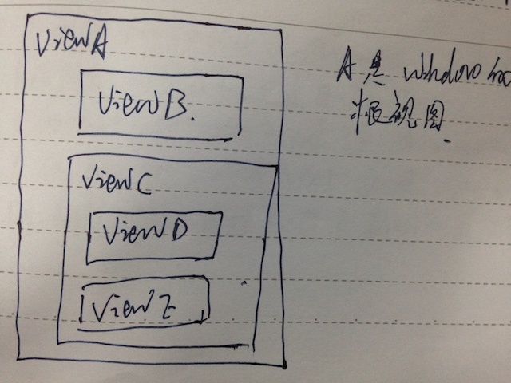
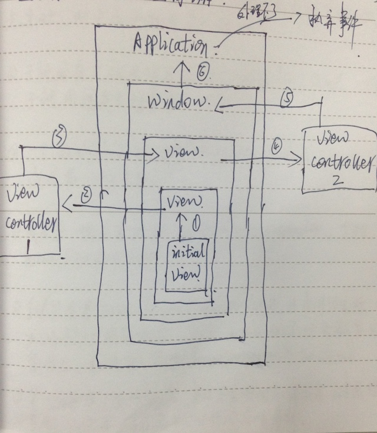

iOS:ResponderChain
从用户点击屏幕，到view响应，这之间发生了什么
事件类型
1.Multitouch Events 触摸事件
2.Accelerometer Events 运动事件
3.Remotecontrol Events 远程控制事件
当这些事件发生时，iOS会通过响应者链条来查找FristResponder进行事件的分发、处理，然后完成响应操作。
响应链
响应链 Responder Chain，在Cocoa中，凡是UIResponder及其子类，都可以作为响应对象。
touch发生时，App通过三步来完成touch事件的相应：
1.生成事件：
touch -> 生成touchEvents -> 加入Application的事件队列中 -> 取出队列中最前面的Events交给Window处理；
2.事件分发，查找第一响应者:
Window收到事件后，在其视图层次结构中找到最适合的一个视图来处理events；（FirstResponder）
3.处理事件:
通常是FirstResponder响应事件，如果FirstResponder无法处理事件，就会把事件传递给下一个响应者，直到UIApplication实例，如果UIApplication实例也无法处理，就会抛弃此事件。
这一过程中，参与的UIApplication、UIViewController、UIView就作为响应对象，构成这次事件响应的响应链 Responder Chain
事件分发
事件分发Event Delivery， 其核心流程是查找First Responder（第一响应者）
hitTest:
window实例首先对它的内容视图进行hitTest，即调用：
- (UIView *)hitTest:(CGPoint)point withEvent:(UIEvent* )event
方法，该方法返回UIView实例；该方法会调用：
- (BOOL)pointInside:(CGPoint)point withEvent:(UIEvent *)event
方法，该方法用来判断touch区域是否在视图内，返回值为BOOl类型：
返回true，则对该视图的所有subViews进行hitTest，直到找到最终touch发生的View；
返回false，则- (UIView *)hitTest: withEvent:返回nil。
hitTest具体流程：

window的根视图是ViewA， 我们点击ViewE，此时HitTest的流程是这样的：
Window接收到Events，对ViewA进行hitTest：ViewA调用- (UIView *)hitTest: withEvent:，该方法调用-(BOOL)pointInside: withEvent:，返回true，ViewA对ViewB和ViewC进行hitTest；
ViewB调用- (BOOL)pointInside: withEvent:，返回false，其- (UIView *)hitTest: withEvent:方法返回nil；
ViewC调用- (BOOL)pointInside: withEvent:，返回true，ViewC对ViewD和ViewEr进行hitTest；
ViewD调用- (BOOL)pointInside: withEvent:，返回false，其- (UIView *)hitTest: withEvent:方法返回nil；
ViewE调用- (BOOL)pointInside: withEvent:，返回true，ViewE没有子视图，则其- (UIView *)hitTest: withEvent:方法返回ViewE的实例；
ViewC的- (UIView *)hitTest: withEvent:方法返回ViewE的实例；
ViewA的- (UIView *)hitTest: withEvent:方法返回ViewE的实例；
Window的- (UIView *)hitTest: withEvent:方法返回ViewE的实例；
UIApplication实例获知ViewE为FirstResponder，UIApplication的实例将Events消息发送给ViewE进行处理。
事件处理

ViewE可以处理该Events，则ViewE进行处理，完成整个Events的响应。
ViewE不能处理该消息，则将Events消息发送给nextResponder，一直沿着ResponderChain向上回溯，知道
UIApplication实例，如果UIApplication实例也无法处理该消息，则这条Events消息被抛弃。
注意事项
- 遍历查找FirstResponder时，从subViews的最上层往下遍历（subViews从后向前遍历）；
- 遍历查找FirstResponder时，当一个子视图告诉OS它没有被点击时，它的子视图不会被检查；
- 子视图在父视图边界外，并且父视图的clipsToBounds = false，子视图接收不到点击事件；（可以通过重写hitTest方法或pointInset来解决此问题）；
- 一个UIWindow对象，在某一时刻只能有一个Responder成为FirstResponder；
- 成为FirstResponder必须canBecomeFirstResponder才能becomeFirstResponder；
- 手动设置某个View becomeFirstResponder时，当touch event 发生时，该View不一定最先响应。（比如button触发时会触发自身响应，而不管有无其他becomeFirstResponder的View）；
- FirstResponder主要体现在，touch event 发生时，没有响应者来处理event，FirstResponder就会尝试处理该 touch event；
- UIApplication的实例是一个响应链的终点，它的next Responder指向nil，已结束整个循环；
- 事件管理应用队列而不是栈，因为队列先进先出。